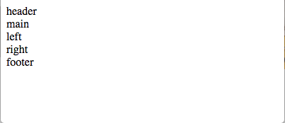

CSS经典布局之圣杯和双飞翼
圣杯布局与双飞翼布局针对的都是三列左右栏固定中间栏边框自适应的网页布局，下来我们就来实现它。
在实现之前我们先来提几个问题？
一、浮动产生的问题都有神马?该如何解决？
二、实现圣杯布局原理是神马？
三、在flexbox和grid中如何实现?
带着问题来解决问题。
传统实现
1.①html代码
1.②效果图

2.①添加基础样式
|
|
2.②效果图
图中我们只是简单的设置了各部分的基础样式，看一开到由于main的宽度设置为了100%所以导致，left和right被挤到下面去了。那么为了实现我们的圣杯布局，这里我们就要用到之前所说的定位和浮动，那么该如何做呢？
3.①让容器container里面的元素浮动
|
|
注：由于在container容器中我们将其所有元素进行了浮动，意味着他们都脱离了文档流，由于footer和header并没有脱离，所以自然的footer就会被main盖住。这里就需要借助clear来清除非浮动块。
3.②效果图
4.①达到最终的效果。先上图
图中将left和right浮动块，让其各自margin-left:-100%; margin-left:-200px;代码如下:
|
|
关于边距负值的理解和应用大家是必须要了解和掌握的，这里我们已经实现了圣杯布局的整体样式，接下来我们来实现main的自适应。
5.①这个时候我们利用内边距padding来实现。将left和right的位置设置为relative。然后就可以固定他们的位置了
5.②效果图

flex实现
6.①flex实现相对容易，没有前面那么复杂。也是一种比较好的实现方案。
6.②效果图
总结
圣杯布局和双飞翼布局在main内容之外的思路都是一样的。区别在于main内部内容的显示不一样，具体的是:圣杯布局，为了中间div内容不被遮挡，将中间div设置了左右padding-left和padding-right后，将左右两个div用相对布局position: relative并分别配合right和left属性，以便左右两栏div移动后不遮挡中间div。双飞翼布局，为了中间div内容不被遮挡，直接在中间div内部创建子div用于放置内容，在该子div里用margin-left和margin-right为左右两栏div留出位置。flex实现就更方便了。